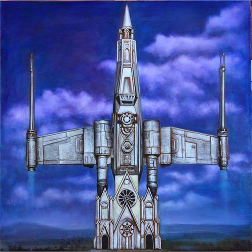
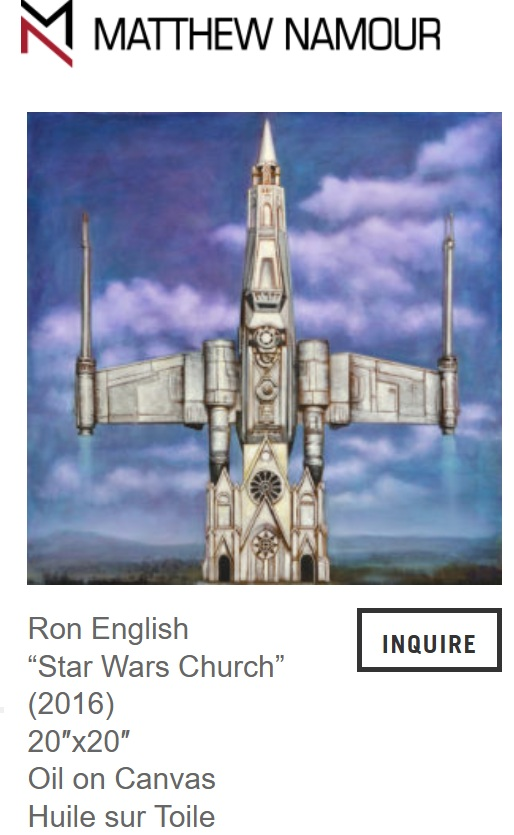
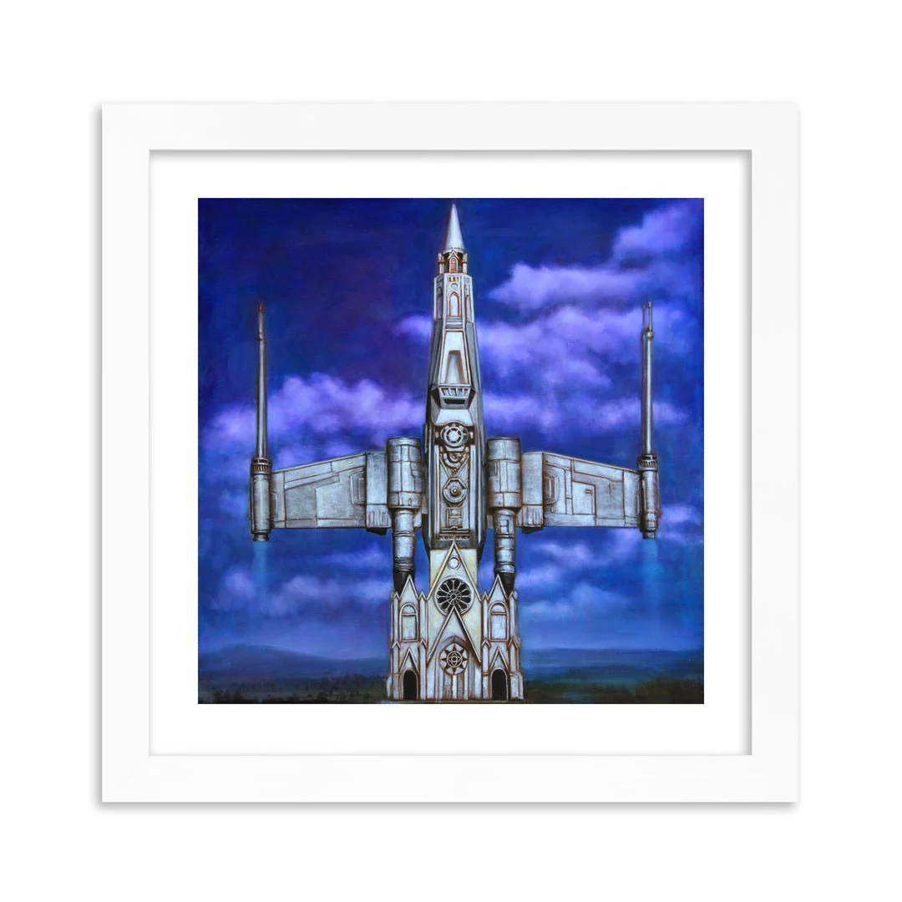

Exhibitions
SCOPE Miami Beach 2015, SCOPE Pavilion, 801 Ocean Drive, Miami Beach, Florida, US, December 2–6, 2015.
Universal Grin, Galerie Matthew Namour, Montréal, Quebec, Canada, October 18–November 18, 2018.
Hidden Treasures, Waltham Fine Art, Waltham, Massachusetts, US, March 5–31, 2022.
Notes
Also known as Church of Star Wars, the title used by Artsy for a related print listing.
This work references the visual language of Star Wars, including spacecraft imagery.
This work appears in Arrested Motion’s coverage of SCOPE Miami Beach 2015.
Ancillary Documentation
The following materials document the reference set, source imagery, exhibition context, gallery documentation, and related archival pigment print.



Selected Online Circulation
Selected examples of the work’s online circulation, reproduction, or discussion. This list is not exhaustive; it is intended to document representative appearances of the image beyond formal exhibition and publication records.